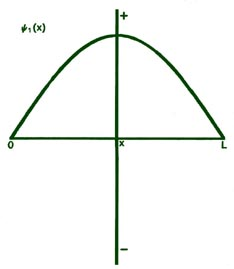
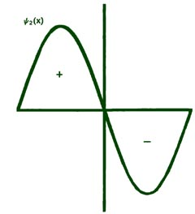
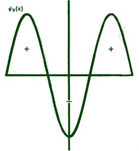
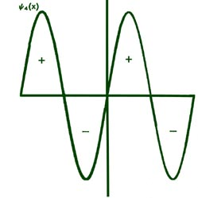
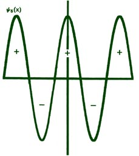
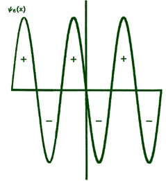

Fig. 2-8. The first six probability amplitudes
yn(x)
for an electron moving on a line of length L. Note the yn(x)
may be negative in sign for certain values of x. The yn(x)
are squared to obtain the probability distrubrition functions Pn(x),
which are, therefore, positive for all values of x. Wherever yn(x)
crosses the x-axis and changes sign, a node appears in the corresponding
Pn(x).